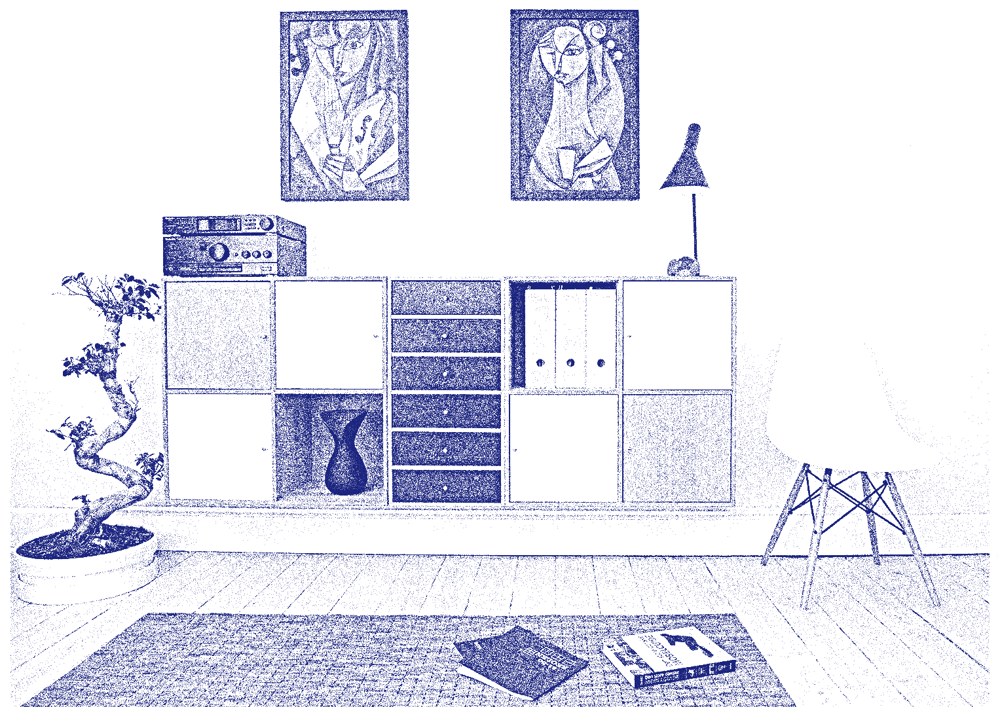

O jornal The Guardian publicou uma matéria em 2013 analisando as fronteiras muradas do mundo. Ou seja, locais onde paredes e grades foram erguidas para dividir territórios e pessoas. Entre os diferentes cenários, a maioria é composta por espaços de conflitos políticos e migratórios, com exceção do caso brasileiro.
O muro apresentado pela notícia tem extensão de 40 milhas, cerca de 64 quilômetros de extensão e alturas de 2 a 2,5 metros. Além de uma estrutura de concreto, existem cercas elétricas no topo, um sistema de monitoramento por vídeo e uma frota particular de seguranças não-armados.
Apesar da descrição de uma base militar, o caso específico é o do condomínio de luxo Alphaville, na região metropolitana de São Paulo. O único caso reportado a gerar uma segregação social e espacial por casta.
Essa comunidade quase utópica, restringe o acesso àqueles que não possuem posição social e capital para ali habitarem e desfrutarem do espaço.E àqueles que ali vivem, podem esbanjar serviços, comércios e espaços elitizados e segregados do resto da cidade. Uma tentativa de homogeneizar o padrão sócio-econômico em que vivem. O conceito que é vendido àqueles que compram ou alugam uma residência no empreendimento é o sonho de uma comunidade onde é possível esquecer as diferenças sociais que os permeiam.
O caso do Alphaville, como de muitos outros condomínios de luxo particulares é um exemplo claro do afastamento gerado pela falta de segurança(ou pela sensação da falta de segurança) características dos centros urbanos do Brasil e disparidades sociais presentes na atualidade, mas também de uma tendência ao não-pertencer e não compartilhar.
"Urban growth involves the chaotic coevolution of organisations, spatial structures, and institutions and is distinct and path dependent for every city. There are regularities, of course, but regularity of design in the built environment should not obscure more profound underlying differences in the processes that govern urban life and economy."
A realidade atual de uma cidade como São Paulo é a de que exportamos a força de trabalho das periferias, para o centro. Num fluxo diário que traz uma série de outros problemas ao cotidiano. É também visível a inferioridade dos serviços públicos ofertados nas periferias e o desgaste funcional relacionado ao transporte, trânsito e longas distâncias percorridas.
"Perhaps nowhere are the challenges posed by urban growth to sustainable development more acutely apparent than in slums, where the poorest urban residents are concentrated in informal settlements, characterized by housing that is non-durable or overcrowded, or that lacks access to improved water and sanitation or security against eviction (United Nations, 2015b).".
Mesmo assim, percebemos inúmeros espaços habitáveis, que são mantidos sem uso e como única alternativa viável, a população marcha em direção às periferias.
Enquanto é possível observar bairros elitizados, com políticas de construção e zoneamento que dificultam a inserção de uma parcela maior de pessoas e de residências que contemplem várias classes sociais e diminuam a disparidade social-econômica. Projetos governamentais e da iniciativa privada ofertam imóveis afastados dos centros e de baixa qualidade, a preços relativamente altos, condições de pagamento insatisfatórias e longos prazos de espera. Esse processo gera a necessidade de assentamento em locais inadequados à vivência humana e de risco para essas comunidades.